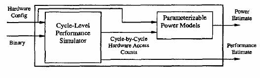

Goal: To perform energy based analysis of the HotSpot cache and compare results with those of Filter cache and 2-level traditional cache.
WATTCH: An architectural level power simulator
“WATTCH” is an architectural simulator that estimates CPU power consumption. The power estimates are based on a suite of parametrizable power models for different hardware structures and on per-cycle resource usage counts generated through cycle level simulation. The power models have been integrated into the “Simple Scalar” architectural simulator.

A modified version of SimpleScalar’s sim-outorder is used to collect results by WATTCH. SimpleScalar provides a simulation environment for modern out-of-order processors with 5-stage pipelines: fetch, decode, issue, writeback and commit. Speculative execution is also supported. Separate banks of 32 integer and floating point registers make up the architected register file and are only written on commit. The power oriented modifications provided by WATTCH (whose modules are integrated within SimpleScalar, specifically ‘power.c’) track which units are accessed on each cycle and how and compute the power values associated with those units accordingly.
These power modules have been verified against industrial circuits and have been found to be within 10% for low level capacitance estimates. The code can be downloaded from: http://www.eecs.harvard.edu/~dbrooks/wattch-form.html
HOTSPOT: An architectural level thermal simulator
HOTSPOT is an accurate and fast thermal model suitable for use in architectural studies. It is based on an equivalent circuit of thermal resistances and capacitances that correspond to microarchitecture blocks and essential aspects of the thermal package. The model has been validated using finite element simulation. HOTSPOT has a simple set of interfaces and hence can be integrated with most power-performance simulators like WATTCH. The chief advantage of HOTSPOT is that it is compatible with the kinds of power/performance models used in the computer-architecture community, requiring no detailed design or synthesis description. HOTSPOT makes it possible to study thermal evolution over long periods of real, full-length applications.
The code for HOTSPOT can be downloaded from: http://lava.cs.virginia.edu/HotSpot/